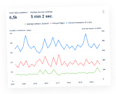
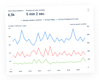

You will benefit from our SaaS marketing product
Our team has developed a powerful tool to audit
website content – a heatmap that features more than 100 reports for e-marketers and
business owners.
We have 10+ years of experience in digital marketing
The Plerdy team has rich experience in auditing,
analyzing, and improving eCommerce websites to boost their conversion rates. So we are
well aware of all the weak spots of eCommerce websites and know what data you need to
run a usability audit of your website.
We enable generating hypotheses about what leads to
low website conversions
Thanks to the data gathered with the Plerdy
heatmap about your website visitors’ behavior, you can generate hypotheses that
potentially explain which functional flaws and problems are causing a low conversion on
your website and how.
The analysis of the dynamic elements of the website
Some services disregard such an important aspect
as the clickability analysis of the dynamic elements when UX auditing, including
drop-down menu, pop-up, and slider. However, thanks to the unique Plerdy auditing
functionality, you will receive this information.
The analysis of both the desktop and mobile versions
of the website
In some areas, websites generate more than 60%
of the traffic from their mobile versions, so it would be unwise not to audit the
behavior of mobile users. With the Plerdy heatmap, you can run a UX auditing analysis
separately for the desktop and mobile versions of your website.
Audit data analysis with Google Analytics
In addition to the Plerdy heatmap data, you also
get the audit data from Google Analytics. Thus, you can analyze the sources of traffic
and its quality to be able to pinpoint any problems. For example, fixing usability bugs
alone will not improve conversion if the website gets mistargeted traffic.


 
